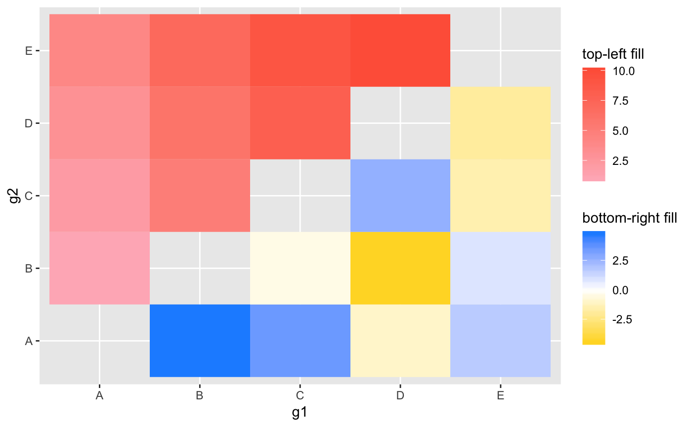
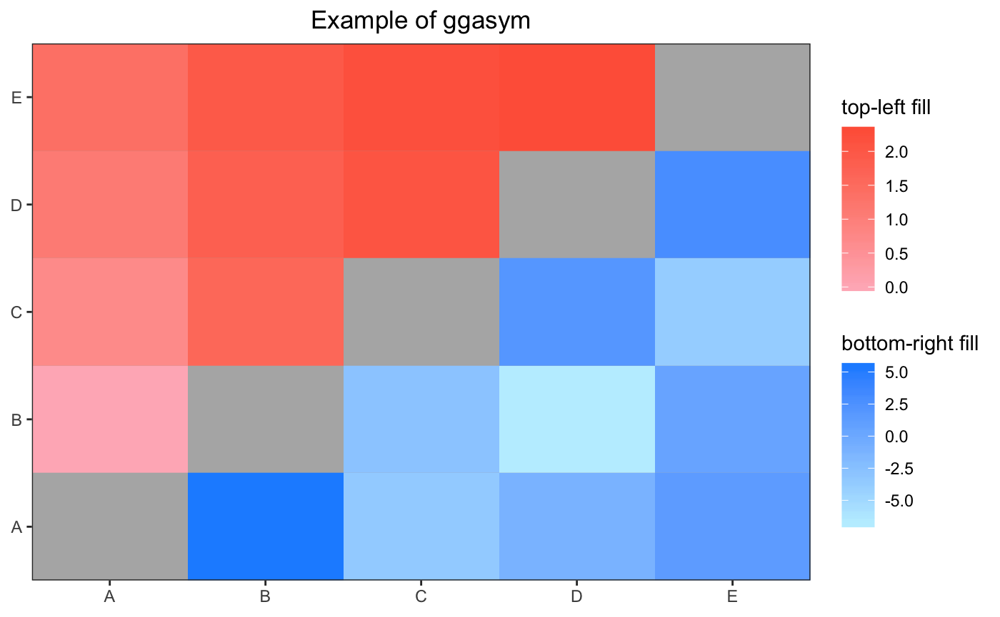
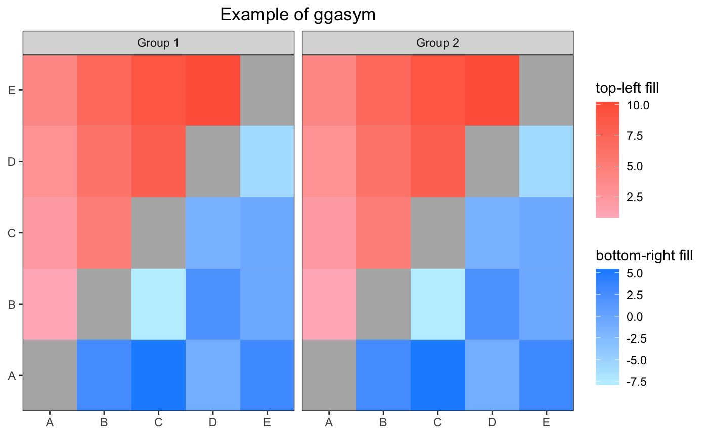
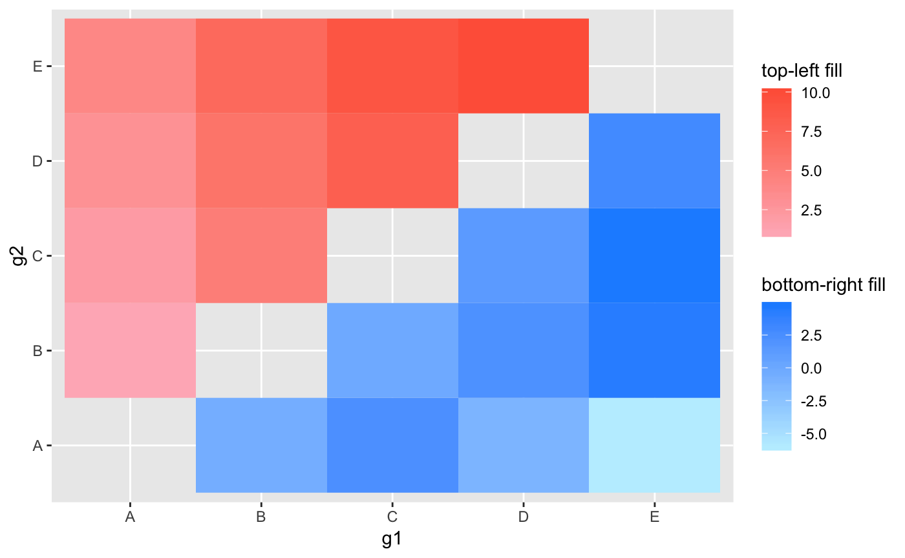
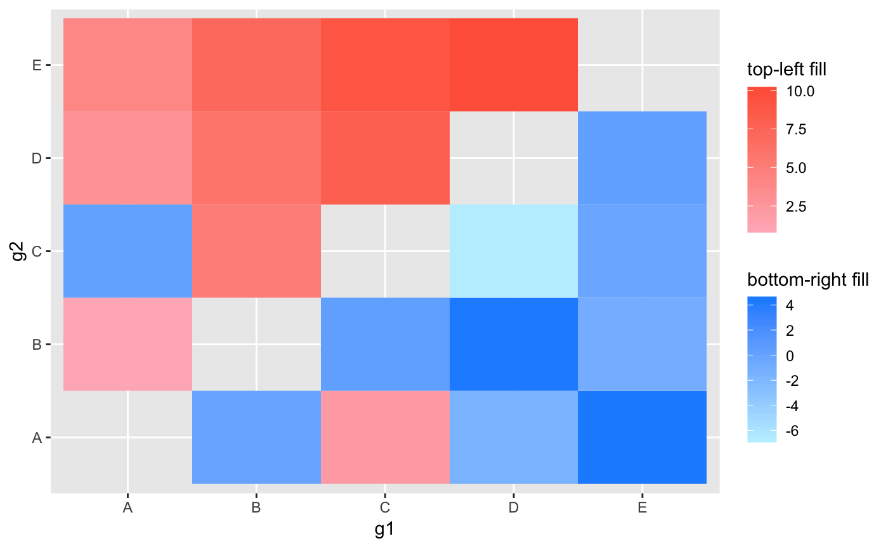

ggasym (pronounced “gg-awesome”) is a package that offers a new geom, geom_asymmat (for “asymmetric matrix”), for the plotting of two fill or color aesthetics on a symmetric matrix. This is likely to be of most use for multi-way statistical tests of multiple groups. Thus, a matrix can be formed of each group along the x and y-axes and the top-left and bottom-right triangles can be filled for the difference in mean values and p-values respectively.
Below, I begin with a simple example to show how easy geom_asymmat is to use for anyone familiar with ggplot2. In another vignette (in progress), I show how the results from a multi-way statistical test can be displayed using ggasym and the wrapper function [insert name of stats test wrapper function here].
For information on using ggplot2, start here.
General Use
tib is a simple tibble object showing two values, val_1 and val_2, for each comparison of the three groups “A”, “B”, and “C”.
tib <- tibble(g1 = c("A", "A", "A", "A", "B", "B", "B", "C", "C", "D"),
g2 = c("B", "C", "D", "E", "C", "D", "E", "D", "E", "E"),
val_1 = seq(1, 10, 1),
val_2 = rnorm(10, mean = 0, sd = 3))
tib[1:5, ]
#> # A tibble: 5 x 4
#> g1 g2 val_1 val_2
#> <chr> <chr> <dbl> <dbl>
#> 1 A B 1 6.60
#> 2 A C 2 0.591
#> 3 A D 3 1.04
#> 4 A E 4 -2.40
#> 5 B C 5 -0.565Scale fill gradient
This data is then plotted with two different fill values, one for the top-left (tl) triangle and the other for the bottom-right (br) triangle. To demonstrate the complete incorporation of normal ggplot2 conventions, the labels for the color scales can be declared like normal using the labs function.
ggplot(tib) +
geom_asymmat(aes(x = g1, y = g2, fill_tl = val_1, fill_br = val_2)) +
scale_fill_tl_gradient(low = "lightpink", high = "tomato") +
scale_fill_br_gradient(low = "lightblue1", high = "dodgerblue") +
labs(fill_tl = "top-left fill", fill_br = "bottom-right fill")
Scale fill gradient with a midpoint
ggplot(tib) +
geom_asymmat(aes(x = g1, y = g2, fill_tl = val_1, fill_br = val_2)) +
scale_fill_tl_gradient(low = "lightpink", high = "tomato") +
scale_fill_br_gradient2(low = "gold", high = "dodgerblue", mid = "white") +
labs(fill_tl = "top-left fill", fill_br = "bottom-right fill")
Adjusting theme and other elements
Since geom_asymmat is just like a normal ggplot geom, it can be integrated into a normal ggplot assembly pipeline. Here is an example where I change the x and y-axes, add a background color, remove the gridlines, and add a title center-justified. I also demonstrate the full integration by passing log(val_1) to the fill_tl aesthetic.
ggplot(tib) +
geom_asymmat(aes(x = g1, y = g2, fill_tl = log(val_1), fill_br = val_2)) +
scale_fill_tl_gradient(low = "lightpink", high = "tomato") +
scale_fill_br_gradient(low = "lightblue1", high = "dodgerblue") +
labs(fill_tl = "top-left fill", fill_br = "bottom-right fill",
title = "Example of ggasym") +
theme_bw() +
theme(axis.title = element_blank(),
plot.title = element_text(hjust = 0.5),
panel.background = element_rect(fill = "grey70"),
panel.grid = element_blank()) +
scale_x_discrete(expand = c(0, 0)) +
scale_y_discrete(expand = c(0, 0))
Facetting
If you have multiple categories, facetting works as expected.
ftib <- bind_rows(tib, tib) %>%
mutate(k = c(rep("Group 1", 10), rep("Group 2", 10)))
ftib[1:5, ]
#> # A tibble: 5 x 5
#> g1 g2 val_1 val_2 k
#> <chr> <chr> <dbl> <dbl> <chr>
#> 1 A B 1 6.60 Group 1
#> 2 A C 2 0.591 Group 1
#> 3 A D 3 1.04 Group 1
#> 4 A E 4 -2.40 Group 1
#> 5 B C 5 -0.565 Group 1ggplot(ftib) +
geom_asymmat(aes(x = g1, y = g2, fill_tl = val_1, fill_br = val_2)) +
scale_fill_tl_gradient(low = "lightpink", high = "tomato") +
scale_fill_br_gradient(low = "lightblue1", high = "dodgerblue") +
labs(fill_tl = "top-left fill", fill_br = "bottom-right fill",
title = "Example of ggasym") +
theme_bw() +
theme(axis.title = element_blank(),
plot.title = element_text(hjust = 0.5),
panel.background = element_rect(fill = "grey70"),
panel.grid = element_blank()) +
scale_x_discrete(expand = c(0, 0)) +
scale_y_discrete(expand = c(0, 0)) +
facet_grid(. ~ k)
Preparing Input Data
This package was developed with comparison data in mind, where columns x and y are compared to produce two metrics, val_1 and val_2. Inside of geom_asymmat, x and y can be rearranged such that the lower level is along x for top-left and along y for bottom-right. Here is an example where I have swapped the g1 and g2 in the second row, but the plot still comes out as expected. If you do not want this automatic behaviour, you can pass FALSE to rearrange_xy in geom_asymmat
# swap "A" <--> "C" in second row
stib <- tibble(g1 = c("A", "C", "A", "A", "B", "B", "B", "C", "C", "D"),
g2 = c("B", "A", "D", "E", "C", "D", "E", "D", "E", "E"),
val_1 = seq(1, 10, 1),
val_2 = rnorm(10, mean = 0, sd = 3))
# plot with default `rearrange_xy = TRUE`
ggplot(stib) +
geom_asymmat(aes(x = g1, y = g2, fill_tl = val_1, fill_br = val_2)) +
scale_fill_tl_gradient(low = "lightpink", high = "tomato") +
scale_fill_br_gradient(low = "lightblue1", high = "dodgerblue") +
labs(fill_tl = "top-left fill", fill_br = "bottom-right fill")
If rearrange_xy = FALSE you can see that the “A” to “C” comparisons are switched because the column passed to x (g1) had “C” and y (g2) had “A”.
# plot with default `rearrange_xy = TRUE`
ggplot(stib) +
geom_asymmat(aes(x = g1, y = g2, fill_tl = val_1, fill_br = val_2),
rearrange_xy = FALSE) +
scale_fill_tl_gradient(low = "lightpink", high = "tomato") +
scale_fill_br_gradient(low = "lightblue1", high = "dodgerblue") +
labs(fill_tl = "top-left fill", fill_br = "bottom-right fill")